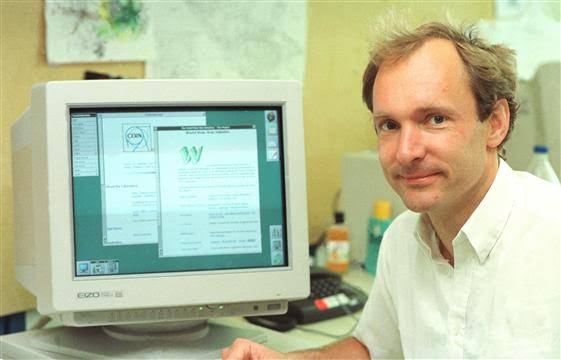

ARPANET är den första formen av dagens internet. Den började användas 1969 av det amerikanska försvaret. ARPANET användes för att kommunicera mellan olika datorer. ARPANET är grunden till dagens internet och utan det så skulle inte internet finnas.
1989 presenterade Tim Burners Lee ett globalt hypertextprojekt, world Wide Web. Tim var en brittisk dataingengör och fysiker som arbetade som Programmerare på bla CERN där han skapade ett programm för eget bruk kallat Enquire. Det var grunden till idén world Wide web som tog fart 1991 då han gjorde webben tillgänglig för allmännheten. WWW skapades för att samla och dela information, skapa ett sammanlänkat nätverk som skulle vara tillgängligt för alla.
Den 6 augusti 1991 skapade Tim Burns Lee världens första hemsida http://info.cern.ch/. Den innehöll hyperlänkar som förklarade hur man gjorde egna sidor och vad WWW var för något.

Den första webbläsare som kunde visa text och bild hette Mosaic och dök upp på marknaden 1993. Webben blev mer användarvänlig för allmänheten och var grunden för dagens webläsare.

En IP-adress är en unik sifferkombination som identifierar en enhet på ett nätverk. Till en början behövde man komma ihåg alla IP-adresser om man ville skicka något. Därför skapades DNS. Det kopplar ihop IP-adresser med domännamn så man inte behöver komma ihåg alla IP-adresser själva längre.
I februari 1993 skapades Sveriges första hemsida av medlemmarna i Lysator med främst Per Hedbor på Linköpings universitet. Den handlar om Lysator och deras versanhet och medlemmar. Lysators hemsida finns kvar idag.
internetkunskap wikipedia Google Google 2creative internetmuseum